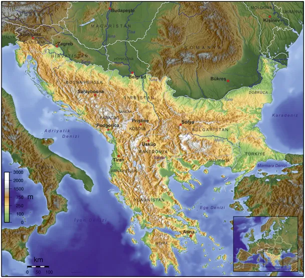
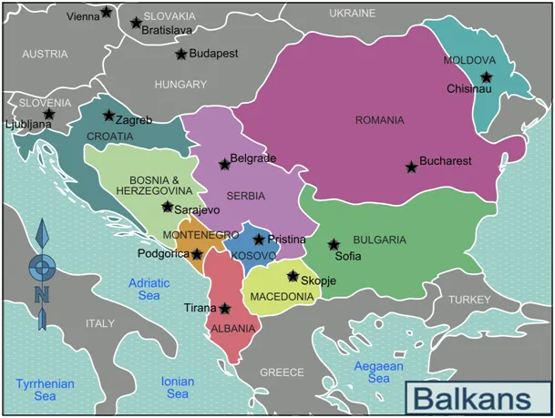
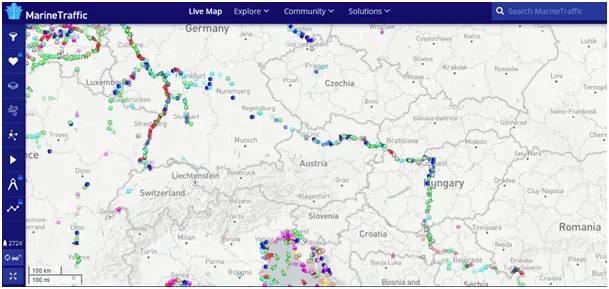

Jeśli Turcja dogada się z Izraelem to witam w Nowym, Innym Świecie.
Z cyklu "Wyłącz TV/internet i popatrz, co się dzieje".
Dziś wybory na Węgrzech i w Serbii. Trudno opisać krótko co to są Bałkany, bo to mnóstwo kultur i interesów. Niedawno powstały tam dwa nowe państwa: Macedonia i Kosowo a spodziewam się, że powstaną kolejne. Na tureckiej Wiki znalazłem dobrą mapę, gdzie granicami Bałkanów jest Dunaj a od Belgradu rzeka Sava domykając półwysep w Alpach. Dunaj łączy jeszcze takie stolice jak Budapeszt, Wiedeń, Bratysława. Trzecia mapka pokazuje aktualny ruch żeglugowy na linii Niemcy - Morze Czarne. Jest to możliwe dzięki kanałowi Dunaj -Ren. Handel rzekami jest dziesiątki razy tańszy niż drogowy. Tam się dużo dzieje. Tymi barkami płyną setki milionów euro każdego dnia.

Chiny aktywnie budują od lat szlaki kolejowe ze swoich portów w Grecji(!) do Europy północnej przez Serbię. Na terenie Rumunii i Kosowa stacjonują amerykańskie siły pilnujące przepływu węglowodorów z Azji na zachód. Od roku przez Turcję płynie rosyjski gaz z południa na północ, do Austrii i na Węgry zaopatrując po drodze Serbię i inne kraje. Piszę o tym, co jakiś czas, aby przypomnieć, że to jest "ucho igielne" Jedwabnego Szlaku.

Kilka lat temu żyliśmy w cieniu konfliktu zachodu z islamem. Tymczasem, gdy za naszą granicą wojują dwa chrześcijańskie kraje Turcja doskonale dogaduje się z Rosją pod wspólnym patronatem Chin. To owocuje wspólnymi projektami energetycznymi. Na końcu tego przeglądu sytuacji trzeba nadmienić, że Turcja w ubiegłym miesiącu znacznie poprawiła stosunki z Izraelem z bardzo napiętych na partnerskie, to bardzo ciekawy rozkład sił. Izrael nie ma poparcia USA do eksploatacji bardzo bogatych złóż gazu na Morzu Śródziemnym, od północy szachuje go Turcja, która chce być pośrednikiem. Jeśli się dogadają to witam w nowym, innym świecie.

Wojna o Morze Czarne, która aktualnie trwa na Ukrainie będzie miała skutki na Bałkanach. Warto przyglądać się w najbliższych miesiącach, co się dzieje w Republice Serbskiej w Bośni (nie mylić z Serbią) oraz co po wyborach będzie na linii Serbia - Kosowo. Przypominam, że to muzułmańskie Państwo powstało na skutek starań USA i przeżyło swe narodziny tylko dzięki ochronie NATO.
Paweł Klimczewski